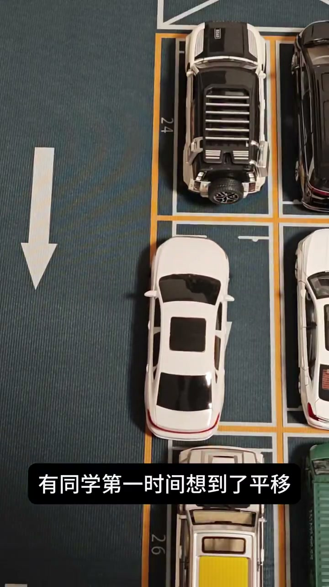
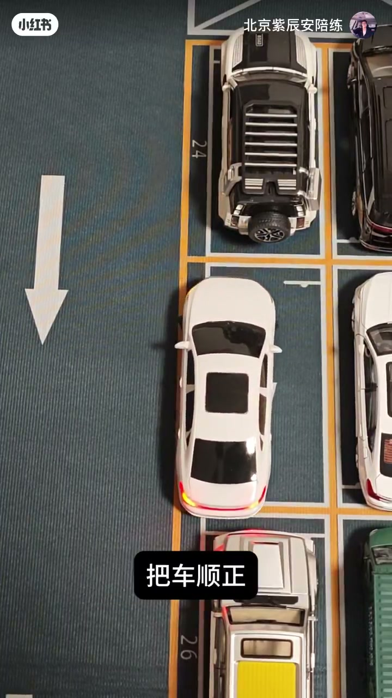
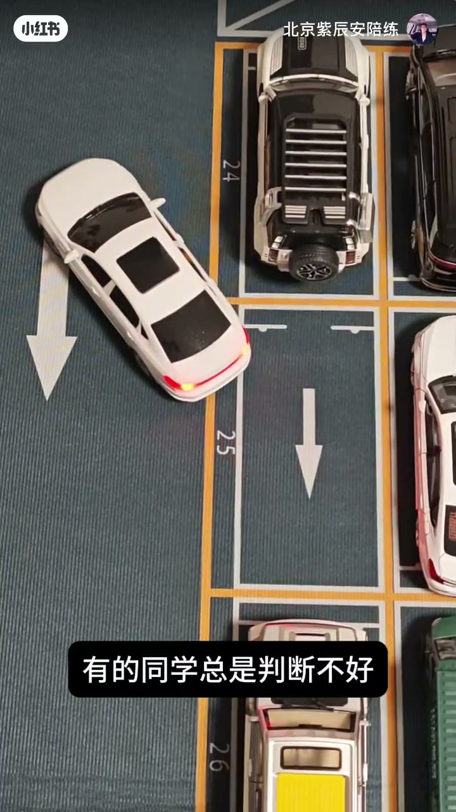
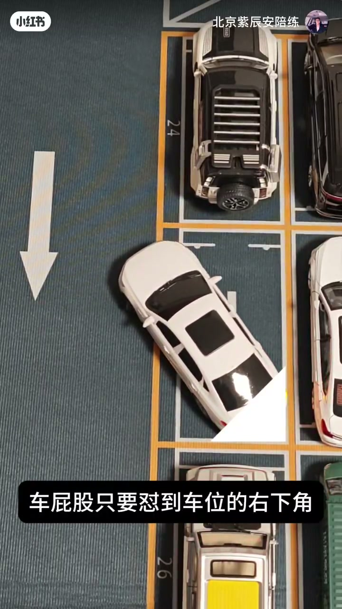

内容要点
知识结构
[00:00→00:15]
问题与误区
停完露半截；有人第一反应只想平移，不够。
[00:15→00:35]
先顺正
把车身摆正，再谈进退；判断不好就会反复露在外面。
[00:35→00:54]
右下角参照
车屁股怼到车位右下角作为关键落点，再修正入库角度。
总结
露半截多半是角度/参照错了：先顺正，再用车尾右下角对齐车位角，而不是只会平移。
口播转录极短；步骤依据片内字幕与沙盘画面重建。
图文实录
露半截：平移不够
00:00 – 00:15
俯拍沙盘上，白色玩具轿车停在车位里却仍显「漏在外面」的问题设定。字幕点出有同学第一时间想到平移——作者暗示只靠左右平移解决不了侧方露半截。
侧方停车停完了发现一半车身在外面

[00:05] 问题：侧方停完仍有一半车身在外；别只想平移
Problem: half the car still sticks out; don't only think sideways shift
先把车顺正
00:15 – 00:35
下一步字幕「把车顺正」：先调整车身与车位线平行/方向正确，再谈进退距离。随后字幕「有的同学总是判断不好」——白车斜向进入，说明判断点不准会反复停歪。

[00:15] 步骤：先把车顺正，再调整进出
Step: straighten the car first, then adjust in/out

[00:35] 常见问题：总是判断不好入库角度
Common issue: always misjudging the entry angle
车屁股怼右下角
00:35 – 00:54
关键参照出现：字幕「车屁股只要怼到车位的右下角」，画面用高亮三角标出目标角。把车尾送到这个角点，再回正方向，用来纠正「永远漏一截在外面」的判断误差。

[00:45] 参照：车屁股怼到车位右下角再修正
Reference: put the rear on the stall's bottom-right corner, then correct